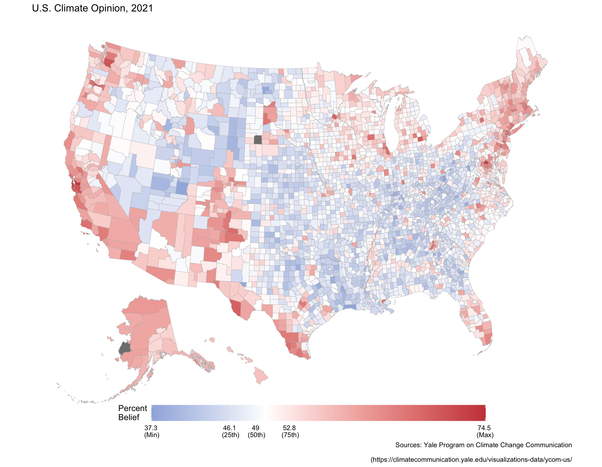

climate_opinion_long <- read_csv(
'https://bcdanl.github.io/data/climate_opinion_2021.csv')Note 10
Map Visualization; Interactive Visualization; Animated Plots
Map Visualization
Classwork 8
Question 1
Filter climate_opinion_long, so that climate_opinion_long has only estimated percentage of people who think that global warming is caused mostly by human activities.
climate_opinion_long <- climate_opinion_long |>
filter(belief == 'human') |>
select(-belief)Question 2
county_map <- socviz::county_map
county_map <- county_map |>
mutate(id = as.numeric(id)) |>
left_join(climate_opinion_long)Question 3
county_map |>
ggplot(aes(x = long, y = lat,
group = group, fill = perc)) +
geom_polygon(color = 'grey70',
linewidth = .1) +
scale_fill_gradient2(
low = "#2E74C0",
mid = 'white',
high = "#CB454A",
midpoint = 50,
breaks = c(min(climate_opinion_long$perc, na.rm = T),
quantile(climate_opinion_long$perc, .25, na.rm = T),
median(climate_opinion_long$perc, na.rm = T),
quantile(climate_opinion_long$perc, .75, na.rm = T),
max(climate_opinion_long$perc, na.rm = T)
),
labels = c(paste(round(min(climate_opinion_long$perc, na.rm = T), 1), "\n(Min)"),
paste(round(quantile(climate_opinion_long$perc, .25, na.rm = T), 1), "\n(25th)"),
paste(round(median(climate_opinion_long$perc, na.rm = T), 1), "\n(50th)"),
paste(round(quantile(climate_opinion_long$perc, .75, na.rm = T), 1), "\n(75th)"),
paste(round(max(climate_opinion_long$perc, na.rm = T), 1), "\n(Max)")
)
) +
labs(fill = 'Percent\nBelief',
title = 'U.S. Climate Opinion, 2021',
caption = 'Sources: Yale Program on Climate Change Communication\n
(https://climatecommunication.yale.edu/visualizations-data/ycom-us/') +
theme_map() +
guides(fill = guide_colorbar(direction = 'horizontal',
barwidth = 25,
title.vjust = 1)) +
theme(plot.caption = element_text(hjust = 1,
margin = margin(20,0,0,0)),
aspect.ratio = .75,
legend.position = c(.5, 0),
legend.justification = c(.5,.5))
Interactive
p <- county_map |>
mutate(GeoName = str_replace_all(GeoName, "'", '')) |>
ggplot(aes(x = long, y = lat,
group = group, fill = perc,
tooltip = interaction(GeoName, str_c('\n',as.character(perc))),
data_id = interaction(GeoName, str_c('\n',as.character(perc))))) +
geom_polygon_interactive(color = 'grey70',
linewidth = .1
) +
scale_fill_gradient2(
low = "#2E74C0",
mid = 'white',
high = "#CB454A",
midpoint = 50,
breaks = c(min(climate_opinion_long$perc, na.rm = T),
quantile(climate_opinion_long$perc, .25, na.rm = T),
median(climate_opinion_long$perc, na.rm = T),
quantile(climate_opinion_long$perc, .75, na.rm = T),
max(climate_opinion_long$perc, na.rm = T)
),
labels = c(paste(round(min(climate_opinion_long$perc, na.rm = T), 1), "\n(Min)"),
paste(round(quantile(climate_opinion_long$perc, .25, na.rm = T), 1), "\n(25th)"),
paste(round(median(climate_opinion_long$perc, na.rm = T), 1), "\n(50th)"),
paste(round(quantile(climate_opinion_long$perc, .75, na.rm = T), 1), "\n(75th)"),
paste(round(max(climate_opinion_long$perc, na.rm = T), 1), "\n(Max)")
)
) +
labs(fill = 'Percent\nBelief',
title = 'U.S. Climate Opinion, 2021',
caption = 'Sources: Yale Program on Climate Change Communication\n
(https://climatecommunication.yale.edu/visualizations-data/ycom-us/') +
theme_map() +
guides(fill = guide_colorbar(direction = 'horizontal',
barwidth = 25,
title.vjust = 1)) +
theme(plot.caption = element_text(hjust = 1,
margin = margin(20,0,0,0)),
aspect.ratio = .75,
legend.position = c(.5, 0),
legend.justification = c(.5,.5))
p1 <- girafe(ggobj = p)
# p1
# saveWidget(p1, 'interactive-ggirafe-map.html')